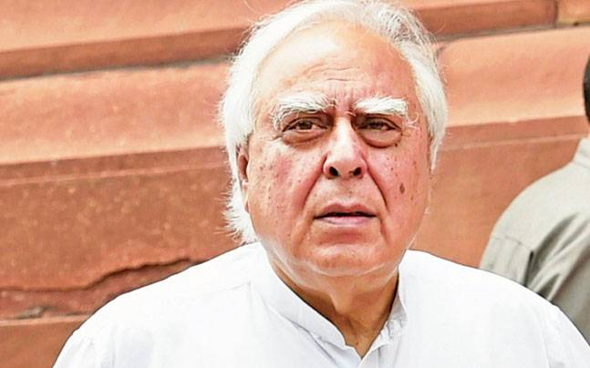
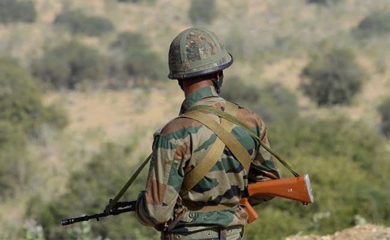

Latest News
SRINAGAR: A newly recruited local terrorist of Hizbul Mujahideen was gunned down in an overnight encounter with security forces that also resulted in the death of an unidentified person in the ensuing crossfire in south Kashmir's Anantnag district, security officials said today.
The encounter broke late last night at Kanibal in Bijbehara of Anantnag district, 55 kms from Srinagar, when the police along with Army and CRPF cordoned off a village following an intelligence input about the presence of terrorists, they said.
During the encounter, which lasted for two hours, one terrorist identified as Yawar, hailing from Anantnag, was killed while two other terrorists managed to escape under the cover of darkness, they said, adding that an Army jawan also sustained bullet injury but was stated to be stable.

The leak of transcripts of telephonic conversations between US President Donald Trump and the leaders of Mexico and Australia is a national security matter, the White House has said. It was referring to the yesterday’s incident of a leading American daily posting highly classified transcripts of Trump’s conversations with Mexican President Enrique Pena Nieto and Australian Prime Minister Malcolm Turnbull.

It was double snub for the Congress from the Supreme Court on Thursday. A three-judge bench of the court not only rejected the party's plea to stay the Rajya Sabha elections in Gujarat scheduled for August 8 or the use of 'None of the Above' (NOTA) vote, but also embarrassed it by asking if it was apprehensive of losing. There was further dig at the grand old party when the bench headed by justice Dipak Misra asked Congress leaders and senior lawyers Kapil Sibal and Abhishek M Singhvi, who represented the party, if they did not challenge NOTA introduced in 2015 till now because it was suiting them. The bench questioned Sibal why he approached the court on the eve of the election when NOTA had come into existence two years ago.